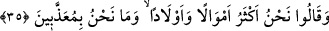
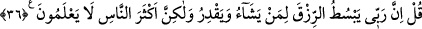

(s.a.)! İşte geçmiş ümmetlerin zenginlerinin tavrı budur. Öyleyse senin kavminin ileri
gelenlerinin durumu seni üzmesin.
Yalanlama konusunda hepsi ortak olmakla birlikte bunun yalnız varlıklı ve şımarık
olanlara tahsis edilmesi, ya bunlar kendilerine uyulan kimseler oldukları için ya da
yalanlama ve inkâra çağıran en büyük sebebin peşinden büyüklenmeyi getiren geniş
nimetlere kavuşma olduğundandır.
35. Ve dediler ki: “Biz malca ve evlâtça daha çoğuz, biz azaba uğratılacak da
değiliz.”
Varlıklı ve şımarık kâfirler kendilerine fitne olan dünyanın süs ve ziynetleriyle
böbürlenerek fakir müminlere “dediler ki: Biz” dünyada sizden “malca ve evlâtça
daha çoğuz” şayet âhiret varsa biz âhirette “azâba uğratılacak da değiliz.” Çünkü
dünyada değerli kılınan âhirette horlanmaz.
36. De ki: Rabbim, dilediğine bol rızık verir ve (dilediğinden) kısar; fakat
insanların çoğu bilmezler.
Ey Muhammed (s.a.), onlara cevap olarak “De ki: Rabbim,” mü’min olsun kâfir olsun
kendisine rızkı genişletmeyi “dilediğine bol rızık verir” rızkı genişletir “ve” nice derin
hikmetlere dayanan iradesi gereğince mü’min olsun kâfir olsun rızkını daraltmak
istediğinin rızkını “kısar” daraltır. Tâatin bulunup bulunmamasına bağlı olan sevab ve
azab ise buna kıyas edilmez. Rızkın daraltılması horlanmaya/önemsenmemeye delâlet
etmediği gibi, rızkın genişletilmesi de değerli kılınmaya delâlet etmez. Bir hadîste şöyle
buyrulmuştur: “Dünya kendisinden iyinin de günahkârın da yediği hazır bir
metâdır/maldır. Âhiret ise sâdık bir vaaddir. Orada karşı konulmaz güç sahibi olan
sultanın hükmü geçer.”[32]
Yeryüzü, Onun herkes için yaydığı bir sofradır
Bu yağma sofrasında düşmanla dostun hiçbir farkı yoktur.
“Fakat insanların çoğu” yâni gaflet ehli ve yardımsız bırakılanlar, rızkın
daraltılmasının ve genişletilmesinin hikmetini “bilmezler.” Bu yüzden de rızkın bol
olmasının kişinin şerefli ve değerli olmasından, rızkın daraltılmasının da kişinin zelil,
hakir ve değersiz olmasından kaynaklandığını iddiâ ederler. Bunlardan ilkinin çoğu